1. Raster is best
2. Do not have unobscured typography
type can be (any combination):
a. stretched
b. skewed
c. scanned
d. covered with other shapes
e. made of many points rather than lines
3. Use CVdazzle for pictures of faces (can be added after picture s taken).
4. For human monitors use .gifs or video where the content doesn’t appear for a while.
Examples:

For this example use a different texture of brush to draw over the typography in the same color as the type.

This is a simple program to resample typography and place vector shapes along the lines, this is good for scaleable type and confuses programs by making them read individual vector shapes rather than the pattern. Here is the link to the program and the file to execute the action

This is a simple distortion to the type which can be achieved through scanning or photoshop emulating captchas. There is also generators that exist online

This idea is that if you send a .gif with the first 3/4 of the frames empty a human monitor will have less of a chance to catch the content.
